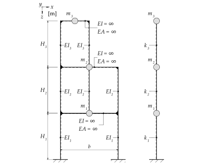
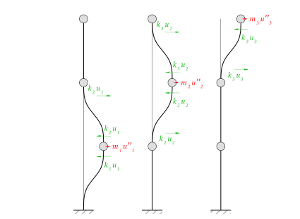
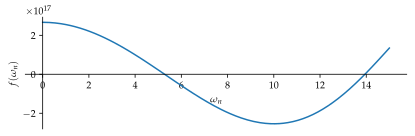
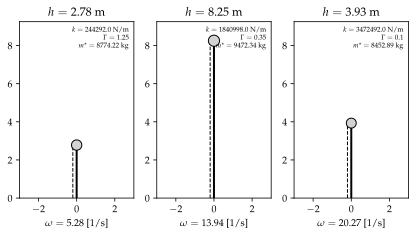
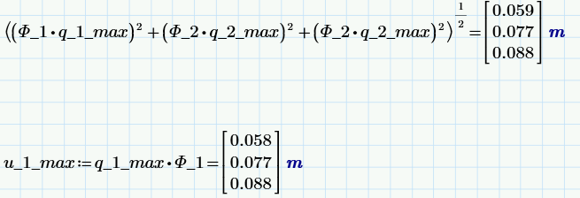
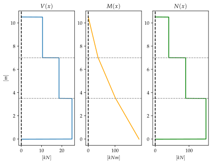

%run style_and_packages.ipynb14 Beispiel: Antwortspektrenverfahren an einem dreistöckigen Gebäude
Das System in Abbildung 14.1 zeigt ein dreistöckiges Gebäude. Modelliert wird dies als Dreimassenschwinger.
14.1 Aufgabenstellung

Gesucht:
- Bestimme die Steifigkeits- und Massenmatrix
- Bestimme die Eigenkreisfrequenzen
- Ermittle die daraus resultierenden Eigenvektoren
- Führe eine modale Analyse durch
- Kontrolliere die Orthogonalität der transformierten Matrizen
- Bestimme die Partizipationsfaktoren
- Ermittle die Pseudobeschleunigung anhand des Antwortspektrums der SIA261:2020
- Ermittle die daraus resultierende Deformationen (Überlagere mittels SRSS-Regel)
- Zeichne die maximalen Schnittkraftverläufe
Gegeben:
- Baugrundklasse \(E\)
- Erdbebenzone \(Z2\)
m_1, m_2, m_3 = sp.symbols('m_1, m_2, m_3')
EI_1, EI_2, EI_3, H_1, H_2, H_3 = sp.symbols("EI_1, EI_2, EI_3, H_1, H_2, H_3")params = {EI_1: 1.15*10**6 *unit.N*unit.m**2,
EI_2: 0.766666*10**6 *unit.N*unit.m**2,
EI_3: 1.15*10**6 *unit.N*unit.m**2,
m_1:6000*unit.N*unit.second**2/unit.m,
m_2:5000*unit.N*unit.second**2/unit.m,
m_3:4000*unit.N*unit.second**2/unit.m,
H_1:3.5*unit.m,
H_2:3.5*unit.m,
H_3:3.5*unit.m,
}
params_plot = convert.param_value(params)
render.dict_to_table(params)| \(EI_{1} = 1150000.0 \text{m}^{2} \text{N}\) | \(EI_{2} = 766666.0 \text{m}^{2} \text{N}\) |
| \(EI_{3} = 1150000.0 \text{m}^{2} \text{N}\) | \(H_{1} = 3.5 \text{m}\) |
| \(H_{2} = 3.5 \text{m}\) | \(H_{3} = 3.5 \text{m}\) |
| \(m_{1} = \frac{6000 \text{N} \text{s}^{2}}{\text{m}}\) | \(m_{2} = \frac{5000 \text{N} \text{s}^{2}}{\text{m}}\) |
| \(m_{3} = \frac{4000 \text{N} \text{s}^{2}}{\text{m}}\) |
14.2 Musterlösung
14.2.1 Massenmatrix \(M\)

M = sp.Matrix([[m_1,0,0],[0,m_2,0],[0,0,m_3]])
render.eq_display(sp.MatrixSymbol('M', 3, 3), M,
sp.MatrixSymbol('M', 3, 3), M.subs(params))\[\begin{equation}\mathbf{M} = \left[\begin{matrix}m_{1} & 0 & 0\\0 & m_{2} & 0\\0 & 0 & m_{3}\end{matrix}\right]\end{equation}\]
\[\begin{equation}\mathbf{M} = \left[\begin{matrix}\frac{6000 \text{N} \text{s}^{2}}{\text{m}} & 0 & 0\\0 & \frac{5000 \text{N} \text{s}^{2}}{\text{m}} & 0\\0 & 0 & \frac{4000 \text{N} \text{s}^{2}}{\text{m}}\end{matrix}\right]\end{equation}\]
14.2.2 Steifigkeitsmatrix \(K\)
14.2.2.1 Steifigkeit der Stockwerke
k_1 = 12 * EI_1 /H_1**3 * 2
k_2 = 12 * EI_2 / H_2**3 * 3
k_3 = 12 * EI_3 / H_3**3 * 2
render.eq_display("k_1", k_1,
'k_1', k_1.subs(params).simplify().evalf(3),
"k_2", k_2,
'k_2', k_2.subs(params).simplify().evalf(3),
"k_3", k_3,
'k_3', k_3.subs(params).simplify().evalf(3))\[\begin{equation}k_{1} = \frac{24 EI_{1}}{H_{1}^{3}}\end{equation}\]
\[\begin{equation}k_{1} = \frac{6.44 \cdot 10^{5} \text{N}}{\text{m}}\end{equation}\]
\[\begin{equation}k_{2} = \frac{36 EI_{2}}{H_{2}^{3}}\end{equation}\]
\[\begin{equation}k_{2} = \frac{6.44 \cdot 10^{5} \text{N}}{\text{m}}\end{equation}\]
\[\begin{equation}k_{3} = \frac{24 EI_{3}}{H_{3}^{3}}\end{equation}\]
\[\begin{equation}k_{3} = \frac{6.44 \cdot 10^{5} \text{N}}{\text{m}}\end{equation}\]
Abgefüllt in die Steifigkeitsmatrix
K = sp.Matrix([[k_1 + k_2, -k_2, 0],[-k_2,k_2+k_3, -k_3], [0,-k_3, k_3]])
render.eq_display(sp.MatrixSymbol('K', 3, 3), "Matrix([[k_1 + k_2, -k_2, 0],[-k_2,k_2+k_3, -k_3], [0,-k_3, k_3]])",
sp.MatrixSymbol('K', 3, 3), K,
sp.MatrixSymbol('K', 3, 3), K.subs(params).evalf(3))\[\begin{equation}\mathbf{K} = \left[\begin{matrix}k_{1} + k_{2} & - k_{2} & 0\\- k_{2} & k_{2} + k_{3} & - k_{3}\\0 & - k_{3} & k_{3}\end{matrix}\right]\end{equation}\]
\[\begin{equation}\mathbf{K} = \left[\begin{matrix}\frac{24 EI_{1}}{H_{1}^{3}} + \frac{36 EI_{2}}{H_{2}^{3}} & - \frac{36 EI_{2}}{H_{2}^{3}} & 0\\- \frac{36 EI_{2}}{H_{2}^{3}} & \frac{36 EI_{2}}{H_{2}^{3}} + \frac{24 EI_{3}}{H_{3}^{3}} & - \frac{24 EI_{3}}{H_{3}^{3}}\\0 & - \frac{24 EI_{3}}{H_{3}^{3}} & \frac{24 EI_{3}}{H_{3}^{3}}\end{matrix}\right]\end{equation}\]
\[\begin{equation}\mathbf{K} = \left[\begin{matrix}\frac{1.29 \cdot 10^{6} \text{N}}{\text{m}} & - \frac{6.44 \cdot 10^{5} \text{N}}{\text{m}} & 0\\- \frac{6.44 \cdot 10^{5} \text{N}}{\text{m}} & \frac{1.29 \cdot 10^{6} \text{N}}{\text{m}} & - \frac{6.44 \cdot 10^{5} \text{N}}{\text{m}}\\0 & - \frac{6.44 \cdot 10^{5} \text{N}}{\text{m}} & \frac{6.44 \cdot 10^{5} \text{N}}{\text{m}}\end{matrix}\right]\end{equation}\]
14.2.3 Eigenvektoren
14.2.3.1 Eigenkreisfrequenzen
Bei einem Mehrmassenschwinger gibt es entsprechend den Freiheitsgraden Eigenkreisfrequenzen \(\omega_n\). Diese lassen sich anhand folgender Gleichung bestimmen:
\[ \det{[\mathbf{K}-\omega_n^2 \mathbf{M}]=0} \tag{14.1}\]
omega_n =sp.symbols('omega_n', real=True)
eq_omega = sp.det(K-omega_n**2*M)
omega_n_solve= sp.solve([eq_omega.subs(params_plot).simplify(), omega_n<=100, omega_n>=0], omega_n, dict=True)
omega_1 = omega_n_solve.args[0].rhs/unit.second
omega_2 = omega_n_solve.args[1].rhs/unit.second
omega_3 = omega_n_solve.args[2].rhs/unit.second
render.eq_display('omega_1', omega_1.evalf(3),
'omega_2', omega_2.evalf(3),
'omega_3', omega_3.evalf(3))
\[\begin{equation}\omega_{1} = \frac{5.28}{\text{s}}\end{equation}\]
\[\begin{equation}\omega_{2} = \frac{13.9}{\text{s}}\end{equation}\]
\[\begin{equation}\omega_{3} = \frac{20.3}{\text{s}}\end{equation}\]
sp.plot(eq_omega.subs(params_plot).evalf(5).simplify(), (omega_n, 0,15),size=(5.9,2), show=False).show()
14.2.3.2 Eigenvektoren \(\phi\)
Durch das Einsetzen der bestimmten Eigenkreisfrequenzen lassen sich die Eigenvektoren bestimmen. Die Einträge des Eigenvektors sind voneinander abhängig und lassen sich dem Entsprechen beliebig definieren. Grundsätzlich wird der maximale Eigenwert zu \(1\) gesetzt.
\[ \mathbf{K} - \omega_n^2 \mathbf{M} \phi_n= 0 \tag{14.2}\]
phi_11, phi_21, phi_31 = sp.symbols('phi_11, phi_21, phi_31')
# Matrix und Gleichung definiert
phi_1 = sp.Matrix([[phi_11], [phi_21], [phi_31]])
expr = ((K-(omega_1*unit.second)**2 * M) * phi_1).subs(params_plot)
# Startwerte
params['phi_11'] = 1
params['phi_21'] = sp.solve(expr[0].subs(params), phi_21)[0]
params['phi_31'] = sp.solve(expr[1].subs(params), phi_31)[0]
# Normierung auf maximalwerte
phi_max = max(abs(phi_11.subs(params)), abs(phi_21.subs(params)), abs(phi_31.subs(params)))
params['phi_11'] = (phi_11 / phi_max).subs(params)
params['phi_21'] = (phi_21 / phi_max).subs(params)
params['phi_31'] = (phi_31 / phi_max).subs(params)
render.eq_display(sp.MatrixSymbol('phi_1', 3,1), phi_1.subs(params).evalf(3))\[\begin{equation}\mathbf{\phi}_{1} = \left[\begin{matrix}0.475\\0.827\\1.0\end{matrix}\right]\end{equation}\]
phi_12, phi_22, phi_32 = sp.symbols('phi_12, phi_22, phi_32')
# Matrix und Gleichung definiert
phi_2 = sp.Matrix([[phi_12], [phi_22], [phi_32]])
expr = ((K-(omega_2*unit.second)**2 * M) * phi_2).subs(params_plot)
# Startwerte
params['phi_12'] = 1
params['phi_22'] = sp.solve(expr[0].subs(params), phi_22)[0]
params['phi_32'] = sp.solve(expr[1].subs(params), phi_32)[0]
# Normierung auf maximalwerte
phi_max = max(abs(phi_12.subs(params)), abs(phi_22.subs(params)), abs(phi_32.subs(params)))
params['phi_12'] = (phi_12 / phi_max).subs(params)
params['phi_22'] = (phi_22 / phi_max).subs(params)
params['phi_32'] = (phi_32 / phi_max).subs(params)
render.eq_display(sp.MatrixSymbol('phi_2', 3,1), phi_2.subs(params).evalf(3))\[\begin{equation}\mathbf{\phi}_{2} = \left[\begin{matrix}1.0\\0.188\\-0.908\end{matrix}\right]\end{equation}\]
phi_13, phi_23, phi_33 = sp.symbols('phi_13, phi_23, phi_33')
# Matrix und Gleichung definiert
phi_3 = sp.Matrix([[phi_13], [phi_23], [phi_33]])
expr = ((K-(omega_3*unit.second)**2 * M) * phi_3).subs(params_plot)
# Startwerte
params['phi_13'] = 1
params['phi_23'] = sp.solve(expr[0].subs(params), phi_23)[0]
params['phi_33'] = sp.solve(expr[1].subs(params), phi_33)[0]
# Normierung auf maximalwerte
phi_max = max(abs(phi_13.subs(params)), abs(phi_23.subs(params)), abs(phi_33.subs(params)))
params['phi_13'] = (phi_13 / phi_max).subs(params)
params['phi_23'] = (phi_23 / phi_max).subs(params)
params['phi_33'] = (phi_33 / phi_max).subs(params)
render.eq_display(sp.MatrixSymbol('phi_3', 3,1), phi_3.subs(params).evalf(3))\[\begin{equation}\mathbf{\phi}_{3} = \left[\begin{matrix}0.547\\-1.0\\0.644\end{matrix}\right]\end{equation}\]
14.2.4 Modale Analyse
Die Modale Analyse zielt darauf ab, den Mehrmassenschwinger zu entkoppeln. Dazu wird in einem ersten Schritt die Orthogonalitätsbedingung kontrolliert. Diese muss erfüllt sein, um eine Entkoppelung durchzuführen. Siehe Kapitel 12.2.2.4 für eine ausführliche Erklärung.
14.2.4.1 Orthogonalitätsbedingung
Angewendet auf die Massenmatrix: Es zeigen sich kleine numerische Unreinheiten, welche vernachlässigt werden können.
render.eq_display(sp.MatrixSymbol('phi_1',2,1).T*sp.MatrixSymbol('M', 2,2)*sp.MatrixSymbol('phi_1',2,1),(phi_1.T*M*phi_1).subs(params).evalf(3),
sp.MatrixSymbol('phi_2',2,1).T*sp.MatrixSymbol('M', 2,2)*sp.MatrixSymbol('phi_1',2,1),(phi_2.T*M*phi_1).subs(params).evalf(3),
sp.MatrixSymbol('phi_3',2,1).T*sp.MatrixSymbol('M', 2,2)*sp.MatrixSymbol('phi_1',2,1),(phi_3.T*M*phi_1).subs(params).evalf(3),
sp.MatrixSymbol('phi_1',2,1).T*sp.MatrixSymbol('M', 2,2)*sp.MatrixSymbol('phi_2',2,1),(phi_1.T*M*phi_2).subs(params).evalf(3),
sp.MatrixSymbol('phi_2',2,1).T*sp.MatrixSymbol('M', 2,2)*sp.MatrixSymbol('phi_2',2,1),(phi_2.T*M*phi_2).subs(params).evalf(3),
sp.MatrixSymbol('phi_3',2,1).T*sp.MatrixSymbol('M', 2,2)*sp.MatrixSymbol('phi_2',2,1),(phi_3.T*M*phi_2).subs(params).evalf(3),
sp.MatrixSymbol('phi_1',2,1).T*sp.MatrixSymbol('M', 2,2)*sp.MatrixSymbol('phi_3',2,1),(phi_1.T*M*phi_3).subs(params).evalf(3),
sp.MatrixSymbol('phi_2',2,1).T*sp.MatrixSymbol('M', 2,2)*sp.MatrixSymbol('phi_3',2,1),(phi_2.T*M*phi_3).subs(params).evalf(3),
sp.MatrixSymbol('phi_3',2,1).T*sp.MatrixSymbol('M', 2,2)*sp.MatrixSymbol('phi_3',2,1),(phi_3.T*M*phi_3).subs(params).evalf(3))\[\begin{equation}\mathbf{\phi}_{1}^{T} \mathbf{M} \mathbf{\phi}_{1} = \left[\begin{matrix}\frac{8.77 \cdot 10^{3} \text{N} \text{s}^{2}}{\text{m}}\end{matrix}\right]\end{equation}\]
\[\begin{equation}\mathbf{\phi}_{2}^{T} \mathbf{M} \mathbf{\phi}_{1} = \left[\begin{matrix}- \frac{1.82 \cdot 10^{-12} \text{N} \text{s}^{2}}{\text{m}}\end{matrix}\right]\end{equation}\]
\[\begin{equation}\mathbf{\phi}_{3}^{T} \mathbf{M} \mathbf{\phi}_{1} = \left[\begin{matrix}- \frac{5.0 \cdot 10^{-12} \text{N} \text{s}^{2}}{\text{m}}\end{matrix}\right]\end{equation}\]
\[\begin{equation}\mathbf{\phi}_{1}^{T} \mathbf{M} \mathbf{\phi}_{2} = \left[\begin{matrix}- \frac{1.82 \cdot 10^{-12} \text{N} \text{s}^{2}}{\text{m}}\end{matrix}\right]\end{equation}\]
\[\begin{equation}\mathbf{\phi}_{2}^{T} \mathbf{M} \mathbf{\phi}_{2} = \left[\begin{matrix}\frac{9.47 \cdot 10^{3} \text{N} \text{s}^{2}}{\text{m}}\end{matrix}\right]\end{equation}\]
\[\begin{equation}\mathbf{\phi}_{3}^{T} \mathbf{M} \mathbf{\phi}_{2} = \left[\begin{matrix}\frac{1.91 \cdot 10^{-11} \text{N} \text{s}^{2}}{\text{m}}\end{matrix}\right]\end{equation}\]
\[\begin{equation}\mathbf{\phi}_{1}^{T} \mathbf{M} \mathbf{\phi}_{3} = \left[\begin{matrix}- \frac{5.0 \cdot 10^{-12} \text{N} \text{s}^{2}}{\text{m}}\end{matrix}\right]\end{equation}\]
\[\begin{equation}\mathbf{\phi}_{2}^{T} \mathbf{M} \mathbf{\phi}_{3} = \left[\begin{matrix}\frac{1.91 \cdot 10^{-11} \text{N} \text{s}^{2}}{\text{m}}\end{matrix}\right]\end{equation}\]
\[\begin{equation}\mathbf{\phi}_{3}^{T} \mathbf{M} \mathbf{\phi}_{3} = \left[\begin{matrix}\frac{8.45 \cdot 10^{3} \text{N} \text{s}^{2}}{\text{m}}\end{matrix}\right]\end{equation}\]
Für die Steifigkeitsmatrix:
render.eq_display(sp.MatrixSymbol('phi_1',2,1).T*sp.MatrixSymbol('K', 2,2)*sp.MatrixSymbol('phi_1',2,1),(phi_1.T*K*phi_1).subs(params).evalf(3),
sp.MatrixSymbol('phi_2',2,1).T*sp.MatrixSymbol('K', 2,2)*sp.MatrixSymbol('phi_1',2,1),(phi_2.T*K*phi_1).subs(params).evalf(3),
sp.MatrixSymbol('phi_3',2,1).T*sp.MatrixSymbol('K', 2,2)*sp.MatrixSymbol('phi_1',2,1),(phi_3.T*K*phi_1).subs(params).evalf(3),
sp.MatrixSymbol('phi_1',2,1).T*sp.MatrixSymbol('K', 2,2)*sp.MatrixSymbol('phi_2',2,1),(phi_1.T*K*phi_2).subs(params).evalf(3),
sp.MatrixSymbol('phi_2',2,1).T*sp.MatrixSymbol('K', 2,2)*sp.MatrixSymbol('phi_2',2,1),(phi_2.T*K*phi_2).subs(params).evalf(3),
sp.MatrixSymbol('phi_3',2,1).T*sp.MatrixSymbol('K', 2,2)*sp.MatrixSymbol('phi_2',2,1),(phi_3.T*K*phi_2).subs(params).evalf(3),
sp.MatrixSymbol('phi_1',2,1).T*sp.MatrixSymbol('K', 2,2)*sp.MatrixSymbol('phi_3',2,1),(phi_1.T*K*phi_3).subs(params).evalf(3),
sp.MatrixSymbol('phi_2',2,1).T*sp.MatrixSymbol('K', 2,2)*sp.MatrixSymbol('phi_3',2,1),(phi_2.T*K*phi_3).subs(params).evalf(3),
sp.MatrixSymbol('phi_3',2,1).T*sp.MatrixSymbol('K', 2,2)*sp.MatrixSymbol('phi_3',2,1),(phi_3.T*K*phi_3).subs(params).evalf(3))\[\begin{equation}\mathbf{\phi}_{1}^{T} \mathbf{K} \mathbf{\phi}_{1} = \left[\begin{matrix}\frac{2.44 \cdot 10^{5} \text{N}}{\text{m}}\end{matrix}\right]\end{equation}\]
\[\begin{equation}\mathbf{\phi}_{2}^{T} \mathbf{K} \mathbf{\phi}_{1} = \left[\begin{matrix}\frac{1.88 \cdot 10^{-9} \text{N}}{\text{m}}\end{matrix}\right]\end{equation}\]
\[\begin{equation}\mathbf{\phi}_{3}^{T} \mathbf{K} \mathbf{\phi}_{1} = \left[\begin{matrix}\frac{6.26 \cdot 10^{-10} \text{N}}{\text{m}}\end{matrix}\right]\end{equation}\]
\[\begin{equation}\mathbf{\phi}_{1}^{T} \mathbf{K} \mathbf{\phi}_{2} = \left[\begin{matrix}\frac{1.88 \cdot 10^{-9} \text{N}}{\text{m}}\end{matrix}\right]\end{equation}\]
\[\begin{equation}\mathbf{\phi}_{2}^{T} \mathbf{K} \mathbf{\phi}_{2} = \left[\begin{matrix}\frac{1.84 \cdot 10^{6} \text{N}}{\text{m}}\end{matrix}\right]\end{equation}\]
\[\begin{equation}\mathbf{\phi}_{3}^{T} \mathbf{K} \mathbf{\phi}_{2} = \left[\begin{matrix}\frac{4.83 \cdot 10^{-9} \text{N}}{\text{m}}\end{matrix}\right]\end{equation}\]
\[\begin{equation}\mathbf{\phi}_{1}^{T} \mathbf{K} \mathbf{\phi}_{3} = \left[\begin{matrix}\frac{6.26 \cdot 10^{-10} \text{N}}{\text{m}}\end{matrix}\right]\end{equation}\]
\[\begin{equation}\mathbf{\phi}_{2}^{T} \mathbf{K} \mathbf{\phi}_{3} = \left[\begin{matrix}\frac{4.83 \cdot 10^{-9} \text{N}}{\text{m}}\end{matrix}\right]\end{equation}\]
\[\begin{equation}\mathbf{\phi}_{3}^{T} \mathbf{K} \mathbf{\phi}_{3} = \left[\begin{matrix}\frac{3.47 \cdot 10^{6} \text{N}}{\text{m}}\end{matrix}\right]\end{equation}\]
14.2.4.2 Modal- und Spektralmatrix
Mittels der Modal- und Spektralmatrix lassen sich die generalisierten Grössen effizient ermitteln.
Phi = sp.Matrix([[phi_1, phi_2, phi_3]])
Omega = sp.Matrix([[omega_1, 0, 0],[0, omega_2, 0],[0, 0, omega_3]])
render.eq_display('Modalmatrix', 'Phi',
sp.MatrixSymbol('Phi', 3, 3), Phi.subs(params).evalf(4),
'Spektralmatrix', 'Omega^2',
sp.MatrixSymbol('Omega^2', 3, 3), (Omega**2).subs(params).evalf(4))\[\begin{equation}Modalmatrix = \Phi\end{equation}\]
\[\begin{equation}\mathbf{\Phi} = \left[\begin{matrix}0.4752 & 1.0 & 0.5468\\0.827 & 0.1885 & -1.0\\1.0 & -0.9076 & 0.6441\end{matrix}\right]\end{equation}\]
\[\begin{equation}Spektralmatrix = \Omega^{2}\end{equation}\]
\[\begin{equation}\mathbf{\Omega}^{2} = \left[\begin{matrix}\frac{27.84}{\text{s}^{2}} & 0 & 0\\0 & \frac{194.4}{\text{s}^{2}} & 0\\0 & 0 & \frac{410.8}{\text{s}^{2}}\end{matrix}\right]\end{equation}\]
14.2.4.3 Generalisierte Grössen
Zur Reduktion des Rechenaufwands werden die numerischen Unreinheiten zu Null gesetzt.
M_star = Phi.T * M * Phi
K_star = Phi.T * K * Phi
M_star_clean = set_small_values_to_zero(M_star.subs(params).evalf(5), 0.1*unit.N *unit.second**2 / unit.m)
K_star_clean = set_small_values_to_zero(K_star.subs(params).evalf(5), 0.1*unit.N / unit.m)
render.eq_display(sp.MatrixSymbol('M^\star', 3,3),sp.simplify(M_star_clean.subs(params)).evalf(5),
sp.MatrixSymbol('K^\star', 3,3),sp.simplify(K_star_clean.subs(params)).evalf(5))
\[\begin{equation}\mathbf{M}^{\star} = \left[\begin{matrix}\frac{8774.2 \text{N} \text{s}^{2}}{\text{m}} & 0 & 0\\0 & \frac{9472.3 \text{N} \text{s}^{2}}{\text{m}} & 0\\0 & 0 & \frac{8452.9 \text{N} \text{s}^{2}}{\text{m}}\end{matrix}\right]\end{equation}\]
\[\begin{equation}\mathbf{K}^{\star} = \left[\begin{matrix}\frac{2.4429 \cdot 10^{5} \text{N}}{\text{m}} & 0 & 0\\0 & \frac{1.841 \cdot 10^{6} \text{N}}{\text{m}} & 0\\0 & 0 & \frac{3.4725 \cdot 10^{6} \text{N}}{\text{m}}\end{matrix}\right]\end{equation}\]
14.2.4.4 Modale Höhen
Die modalen Höhen bestimmen sich aus Gleichung 14.3:
\[ H_n = \frac{L_n^\theta}{L_n} \tag{14.3}\]
\[ L_n = \phi_n^T \cdot \mathbf{M 1} \tag{14.4}\]
\[ L_n^\theta = \sum_{j=1}^N H_j \cdot m_j \cdot \phi_{jn} \tag{14.5}\]
Angewendet auf das Beispiel folgt:
one_vec = sp.ones(3,1)
H_matrix = sp.Matrix([H_1, H_2, H_3])
H_modal = (H_matrix.T*M*Phi).T.multiply_elementwise((M*Phi.T*one_vec).applyfunc(lambda x: x**-1))
render.eq_display(
sp.MatrixSymbol('H', 3,1), H_matrix,
sp.MatrixSymbol('H', 3,1), H_modal,
sp.MatrixSymbol('H', 3,1), H_modal.subs(params).evalf(3),
)\[\begin{equation}\mathbf{H} = \left[\begin{matrix}H_{1}\\H_{2}\\H_{3}\end{matrix}\right]\end{equation}\]
\[\begin{equation}\mathbf{H} = \left[\begin{matrix}\frac{H_{1} m_{1} \phi_{11} + H_{2} m_{2} \phi_{21} + H_{3} m_{3} \phi_{31}}{m_{1} \phi_{11} + m_{1} \phi_{21} + m_{1} \phi_{31}}\\\frac{H_{1} m_{1} \phi_{12} + H_{2} m_{2} \phi_{22} + H_{3} m_{3} \phi_{32}}{m_{2} \phi_{12} + m_{2} \phi_{22} + m_{2} \phi_{32}}\\\frac{H_{1} m_{1} \phi_{13} + H_{2} m_{2} \phi_{23} + H_{3} m_{3} \phi_{33}}{m_{3} \phi_{13} + m_{3} \phi_{23} + m_{3} \phi_{33}}\end{matrix}\right]\end{equation}\]
\[\begin{equation}\mathbf{H} = \left[\begin{matrix}2.78 \text{m}\\8.25 \text{m}\\3.93 \text{m}\end{matrix}\right]\end{equation}\]
Modalen Höhen kleiner als null sind zu vernachlässigen.
14.2.4.5 Kontrolle der modalen Transformation
Die Eigenkreisfrequenzen ändern sich durch die Transformation nicht.
omega_1_kontrolle = sp.sqrt(K_star_clean[0] / M_star_clean[0])
omega_2_kontrolle = sp.sqrt(K_star_clean[4] / M_star_clean[4])
omega_3_kontrolle = sp.sqrt(K_star_clean[8] / M_star_clean[8])
render.eq_display('omega_1', omega_1.subs(params).simplify().evalf(3),
'omega_1_modal', omega_1_kontrolle.subs(params).simplify().evalf(3),
'omega_2', omega_2.subs(params).simplify().evalf(4),
'omega_2_modal', omega_2_kontrolle.subs(params).simplify().evalf(4),
'omega_3', omega_3.subs(params).simplify().evalf(4),
'omega_3_modal', omega_3_kontrolle.subs(params).simplify().evalf(4))
\[\begin{equation}\omega_{1} = \frac{5.28}{\text{s}}\end{equation}\]
\[\begin{equation}\omega_{1 modal} = \frac{5.28}{\text{s}}\end{equation}\]
\[\begin{equation}\omega_{2} = \frac{13.94}{\text{s}}\end{equation}\]
\[\begin{equation}\omega_{2 modal} = \frac{13.94}{\text{s}}\end{equation}\]
\[\begin{equation}\omega_{3} = \frac{20.27}{\text{s}}\end{equation}\]
\[\begin{equation}\omega_{3 modal} = \frac{20.27}{\text{s}}\end{equation}\]
14.2.4.6 Partizipationsfaktor \(\Gamma\)
Die Verteilung des Partizipationsfaktor gibt einen direkten Hinweis, welcher Eigenmode an der Gesamtanwort den grössten Einfluss (beteiligt bzw. partizipiert) hat.
\[ \Gamma_n = \frac{\Phi_n^T \mathbf{M 1}}{\Phi_n^T \mathbf{M}\Phi_n} \tag{14.6}\]
In allgemeiner Form lautet der Partizipationsfaktor:
\[ \Gamma_n = \frac{\Phi_n^T \mathbf{M r^\star}}{\Phi_n^T \mathbf{M}\Phi_n} \tag{14.7}\]
\(\mathbf{r^\star}\) beschreibt die Starrkörperverschiebung infolge der Erdbebenanregung \(u_g\) am Fusspunkt des Gesamtsystems.
\[ \mathbf{r^\star} = \begin{bmatrix} FHG_1 \\ FHG_2 \end{bmatrix}= \begin{bmatrix} \cos(0) \\ \cos(0) \end{bmatrix}= \begin{bmatrix} 1 \\ 1 \end{bmatrix}= \mathbf{1} \tag{14.8}\]
Die Partizipationsmatrix lässt sich direkt durch folgende Gleichung ermitteln:
\[ \Gamma = M^{\star-1} \cdot \Phi^T \cdot M \cdot 1 \tag{14.9}\]
Gelöst mit Gleichung 14.9:
Gamma = M_star_clean**-1 * Phi.T * M*one_vec
render.eq_display(
sp.MatrixSymbol('Gamma',3,1), Gamma.subs(params).evalf(3))\[\begin{equation}\mathbf{\Gamma} = \left[\begin{matrix}1.25\\0.35\\0.101\end{matrix}\right]\end{equation}\]
Gelöst mit Gleichung 14.7:
gamma_1 = (phi_1.T*M*one_vec)[0]/(phi_1.T*M*phi_1)[0]
gamma_2 = (phi_2.T*M*one_vec)[0]/(phi_2.T*M*phi_2)[0]
gamma_3 = (phi_3.T*M*one_vec)[0]/(phi_3.T*M*phi_3)[0]
gamma_sqr = sp.Matrix([[gamma_1**2],[gamma_2**2]])
render.eq_display('Gamma_1', gamma_1,
'Gamma_1', gamma_1.subs(params).evalf(3),
'Gamma_2', gamma_2,
'Gamma_2', gamma_2.subs(params).evalf(3),
'Gamma_3', gamma_3,
'Gamma_3', gamma_3.subs(params).evalf(3))\[\begin{equation}\Gamma_{1} = \frac{m_{1} \phi_{11} + m_{2} \phi_{21} + m_{3} \phi_{31}}{m_{1} \phi_{11}^{2} + m_{2} \phi_{21}^{2} + m_{3} \phi_{31}^{2}}\end{equation}\]
\[\begin{equation}\Gamma_{1} = 1.25\end{equation}\]
\[\begin{equation}\Gamma_{2} = \frac{m_{1} \phi_{12} + m_{2} \phi_{22} + m_{3} \phi_{32}}{m_{1} \phi_{12}^{2} + m_{2} \phi_{22}^{2} + m_{3} \phi_{32}^{2}}\end{equation}\]
\[\begin{equation}\Gamma_{2} = 0.35\end{equation}\]
\[\begin{equation}\Gamma_{3} = \frac{m_{1} \phi_{13} + m_{2} \phi_{23} + m_{3} \phi_{33}}{m_{1} \phi_{13}^{2} + m_{2} \phi_{23}^{2} + m_{3} \phi_{33}^{2}}\end{equation}\]
\[\begin{equation}\Gamma_{3} = 0.101\end{equation}\]
hoehe = list(H_modal.subs(params).evalf(3)/unit.m)
hoehe = [np.float64(i).round(2) for i in hoehe]
masse = list(M_star_clean/unit.N/unit.second**2 * unit.m)
masse = [np.float64(i).round(2) for i in masse if i != 0]
steifigkeiten = list(K_star_clean/unit.N * unit.m)
steifigkeiten = [np.float64(i).round(2) for i in steifigkeiten if i != 0]
omegas = list(Omega*unit.second)
omegas = [np.float64(i).round(2) for i in omegas if i != 0]
gammas = list(Gamma.subs(params).evalf(3))
gammas = [np.float64(i).round(2) for i in gammas if i != 0]
plot_einmassenschwinger(hoehe, masse, steifigkeiten, omegas, gammas)
14.2.5 Elastisches Antwortspektrum
Aus der Aufgabenstellung darf nach (Schweizerischer Ingenieur- und Architektenverein (SIA), 2020) Abs. 16.2.3.1 Kurve \(E\) gewählt werden.
a_gd = 1 *unit.m /unit.second**214.2.5.1 Grundschwingzeit
Die Grundschwingzeit kann anhand der bereits ermittelten Eigenkreisfrequenzen ermittelt werden.
\[ T = \frac{2 \pi}{\omega} \tag{14.10}\]
T_1 = ((2*sp.pi)/omega_1)
T_2 = ((2*sp.pi)/omega_2)
T_3 = ((2*sp.pi)/omega_3)
render.eq_display('T_1', T_1.subs(params).evalf(3),
'T_2', T_2.subs(params).evalf(3),
'T_3', T_3.subs(params).evalf(3),
)\[\begin{equation}T_{1} = 1.19 \text{s}\end{equation}\]
\[\begin{equation}T_{2} = 0.451 \text{s}\end{equation}\]
\[\begin{equation}T_{3} = 0.31 \text{s}\end{equation}\]
14.2.5.2 Elastisches Antwortspektrum
Es wird für sämtliche Eigenperioden die Pseudobeschleunigung bestimmt. Siehe dazu Schweizerischer Ingenieur- und Architektenverein (SIA) (2020).
S_e_1 = antwortspektrum(a_gd, T_1.subs(params).evalf(3), Baugrundklasse='D')
render.eq_display('S_e_1', S_e_1.evalf(3))| \(S = 1.7\) | \(T_{B} = 0.1 \text{s}\) |
| \(T_{C} = 0.5 \text{s}\) | \(T_{D} = 2.0 \text{s}\) |
| \(\eta = 1\) |
\[\begin{equation}S_{e} = \frac{2.5 S_{} T_{C} a_{gd} \eta}{T}\end{equation}\]
\[\begin{equation}S_{e 1} = \frac{1.78 \text{m}}{\text{s}^{2}}\end{equation}\]
S_e_2 = antwortspektrum(a_gd, T_2.subs(params).evalf(3), Baugrundklasse = 'D')
render.eq_display('S_e_2', S_e_2.evalf(3))| \(S = 1.7\) | \(T_{B} = 0.1 \text{s}\) |
| \(T_{C} = 0.5 \text{s}\) | \(T_{D} = 2.0 \text{s}\) |
| \(\eta = 1\) |
\[\begin{equation}S_{e} = 2.5 S_{} a_{gd} \eta\end{equation}\]
\[\begin{equation}S_{e 2} = \frac{4.25 \text{m}}{\text{s}^{2}}\end{equation}\]
S_e_3 = antwortspektrum(a_gd, T_3.subs(params).evalf(3), Baugrundklasse = 'D')
render.eq_display('S_e_3', S_e_3.evalf(3))| \(S = 1.7\) | \(T_{B} = 0.1 \text{s}\) |
| \(T_{C} = 0.5 \text{s}\) | \(T_{D} = 2.0 \text{s}\) |
| \(\eta = 1\) |
\[\begin{equation}S_{e} = 2.5 S_{} a_{gd} \eta\end{equation}\]
\[\begin{equation}S_{e 3} = \frac{4.25 \text{m}}{\text{s}^{2}}\end{equation}\]
14.2.6 Maximale Deformation
Die maximale Deformation resultiert aus der Beschleunigung \(S_e\) und der Eigenkreisfrequenz \(\omega_n^2\). Für die Modalen EMS gilt es diese anhand der Partizipationsfaktoren zu gewichten. Zur effektiven Bestimmung der Auslenkung sind die Resultate der EMS mittels SRSS-Regel zu überlagern.
q_1_max = Gamma[0] * S_e_1 / omega_1**2
q_2_max = Gamma[1] * S_e_2 / omega_2**2
q_3_max = Gamma[2] * S_e_3 / omega_3**2
render.eq_display(
'q_1_max',"Gamma_1 * S_e_1 / omega_1**2",
'q_1_max', q_1_max.subs(params).evalf(3),
'q_2_max',"Gamma_2 * S_e_2 / omega_2**2",
'q_2_max', q_2_max.subs(params).evalf(3),
'q_3_max',"Gamma_3 * S_e_3 / omega_3**2",
'q_3_max', q_3_max.subs(params).evalf(3))\[\begin{equation}q_{1 max} = \frac{\Gamma_{1} S_{e 1}}{\omega_{1}^{2}}\end{equation}\]
\[\begin{equation}q_{1 max} = 0.0803 \text{m}\end{equation}\]
\[\begin{equation}q_{2 max} = \frac{\Gamma_{2} S_{e 2}}{\omega_{2}^{2}}\end{equation}\]
\[\begin{equation}q_{2 max} = 0.00765 \text{m}\end{equation}\]
\[\begin{equation}q_{3 max} = \frac{\Gamma_{3} S_{e 3}}{\omega_{3}^{2}}\end{equation}\]
\[\begin{equation}q_{3 max} = 0.00105 \text{m}\end{equation}\]
Um die Entkoppelung rückzuführen, gilt es die erhaltenen Resultate zu überlagern. Dabei gibt es unterschiedliche Ansätze. Bei weit auseinander liegenden Eigenfrequenzen kann die SRSS-Überlagerung (Square-root of the sum of squares) verwendet werden.
\[ u_{max} = \sqrt{\sum_{n=1}^2 (q_{n} \cdot \phi_n)^2} \tag{14.11}\]
u_max = ((phi_1*q_1_max).applyfunc(lambda x: x**2)+(phi_2*q_2_max).applyfunc(lambda x: x**2)+(phi_3*q_3_max).applyfunc(lambda x: x**2)).applyfunc(sp.sqrt)
render.eq_display(sp.MatrixSymbol('u_max', 3,1), u_max.subs(params).evalf(3))\[\begin{equation}\mathbf{u}_{max} = \left[\begin{matrix}0.0389 \text{m}\\0.0664 \text{m}\\0.0806 \text{m}\end{matrix}\right]\end{equation}\]
Stephan, wieso multiplizierst du die SRSS- Überlagerung nochmals mit \(phi_1\)

14.2.7 Maximale Schnittkräfte
14.2.7.1 Querkräfte
Die Einwirkungen resultieren aus der Masse multipliziert mit der Beschleunigung aus dem Antwortspektrum. Dazu sind in einem ersten Schritt die beiden entkoppelten EMS voneinander getrennt zu betrachten. Die Überlagerung erfolgt erst bei den ermittelten Querkräften.
\[ m_1 = \Gamma \cdot M \cdot \phi_1 \tag{14.12}\]
\[ F_{1max} = m_1 \cdot S_{e1} \tag{14.13}\]
Aus dem ersten EMS folgt:
m_1_part = Gamma[0] * M * phi_1
F_1_max = m_1_part* S_e_1
V_1 = sp.Matrix([[F_1_max[0]+F_1_max[1]+F_1_max[2]],[F_1_max[1]+F_1_max[2]], [F_1_max[2]]])
render.eq_display(sp.MatrixSymbol('m_1', 3,1), m_1_part.subs(params).evalf(5),
sp.MatrixSymbol('F_1_max', 3,1), F_1_max.subs(params).evalf(5),
sp.MatrixSymbol('V_1', 3,1), V_1.subs(params).evalf(5))\[\begin{equation}\mathbf{m}_{1} = \left[\begin{matrix}\frac{3569.5 \text{N} \text{s}^{2}}{\text{m}}\\\frac{5177.3 \text{N} \text{s}^{2}}{\text{m}}\\\frac{5008.3 \text{N} \text{s}^{2}}{\text{m}}\end{matrix}\right]\end{equation}\]
\[\begin{equation}\mathbf{F}_{1 max} = \left[\begin{matrix}6370.4 \text{N}\\9239.7 \text{N}\\8938.1 \text{N}\end{matrix}\right]\end{equation}\]
\[\begin{equation}\mathbf{V}_{1} = \left[\begin{matrix}24548.0 \text{N}\\18178.0 \text{N}\\8938.1 \text{N}\end{matrix}\right]\end{equation}\]
Aus dem zweiten EMS folglich:
m_2_part = Gamma[1] * M * phi_2
F_2_max = m_2_part* S_e_2
V_2 = sp.Matrix([[F_2_max[0]+F_2_max[1]+F_2_max[2]],[F_2_max[1]+F_2_max[2]], [F_2_max[2]]])
render.eq_display(sp.MatrixSymbol('m_2', 3,1), m_2_part.subs(params).evalf(5),
sp.MatrixSymbol('F_2_max', 3,1), F_2_max.subs(params).evalf(5),
sp.MatrixSymbol('V_2', 3,1), V_2.subs(params).evalf(5))\[\begin{equation}\mathbf{m}_{2} = \left[\begin{matrix}\frac{2098.0 \text{N} \text{s}^{2}}{\text{m}}\\\frac{329.53 \text{N} \text{s}^{2}}{\text{m}}\\- \frac{1269.4 \text{N} \text{s}^{2}}{\text{m}}\end{matrix}\right]\end{equation}\]
\[\begin{equation}\mathbf{F}_{2 max} = \left[\begin{matrix}8916.4 \text{N}\\1400.5 \text{N}\\- 5394.8 \text{N}\end{matrix}\right]\end{equation}\]
\[\begin{equation}\mathbf{V}_{2} = \left[\begin{matrix}4922.1 \text{N}\\- 3994.4 \text{N}\\- 5394.8 \text{N}\end{matrix}\right]\end{equation}\]
Aus dem dritten EMS folglich:
m_3_part = Gamma[2] * M * phi_3
F_3_max = m_3_part* S_e_3
V_3 = sp.Matrix([[F_3_max[0]+F_3_max[1]+F_3_max[2]],[F_3_max[1]+F_3_max[2]], [F_3_max[2]]])
render.eq_display(sp.MatrixSymbol('m_3', 3,1), m_3_part.subs(params).evalf(5),
sp.MatrixSymbol('F_3_max', 3,1), F_3_max.subs(params).evalf(5),
sp.MatrixSymbol('V_3', 3,1), V_3.subs(params).evalf(5))\[\begin{equation}\mathbf{m}_{3} = \left[\begin{matrix}\frac{332.51 \text{N} \text{s}^{2}}{\text{m}}\\- \frac{506.79 \text{N} \text{s}^{2}}{\text{m}}\\\frac{261.12 \text{N} \text{s}^{2}}{\text{m}}\end{matrix}\right]\end{equation}\]
\[\begin{equation}\mathbf{F}_{3 max} = \left[\begin{matrix}1413.2 \text{N}\\- 2153.9 \text{N}\\1109.8 \text{N}\end{matrix}\right]\end{equation}\]
\[\begin{equation}\mathbf{V}_{3} = \left[\begin{matrix}369.07 \text{N}\\- 1044.1 \text{N}\\1109.8 \text{N}\end{matrix}\right]\end{equation}\]
Maximale Querkraft aus Überlagerung beider EMS mittels SRSS-Regel.
\[ V_{max} = \sqrt{V_1^2 + V_2^2 + V_3^2} \tag{14.14}\]
V_max = (V_1.applyfunc(lambda x: x**2)+V_2.applyfunc(lambda x: x**2)+V_3.applyfunc(lambda x: x**2)).applyfunc(sp.sqrt)
render.eq_display(sp.MatrixSymbol('V_max', 3,1), V_max.subs(params).evalf(3))\[\begin{equation}\mathbf{V}_{max} = \left[\begin{matrix}2.5 \cdot 10^{4} \text{N}\\1.86 \cdot 10^{4} \text{N}\\1.05 \cdot 10^{4} \text{N}\end{matrix}\right]\end{equation}\]
14.2.7.2 Biegemomente
Die Biegemomente lassen sich abschliessend anhand der Querkräfte bestimmen.
14.2.7.3 Normalkräfte
Die Normalkräfte resultieren aus den Punktmassen.
# Querkraft
V_x = sp.Piecewise((V_max[0].subs(params)/unit.N, ((x>0)&(x<=H_1.subs(params_plot)))), (V_max[1].subs(params)/unit.N, ((x>=H_1.subs(params_plot))&(x<=(H_1+H_2).subs(params_plot)))), (V_max[2].subs(params)/unit.N, ((x>=(H_1+H_2).subs(params_plot))&(x<=(H_1+H_2+H_3).subs(params_plot)))), (0,True))
# Biegemoment
C_1 = sp.symbols('C_1')
M_x = sp.integrate(-V_x, x) + C_1
C_1_solve = sp.solve(M_x.subs(x, (H_1+H_2+H_3).subs(params_plot)), C_1)[0]
M_x = M_x.subs(C_1, C_1_solve)
# Normalkraft
g = 10*unit.m/unit.second**2
N_x = sp.Piecewise(((m_1+m_2+m_3).subs(params)*g/unit.N, ((x>0)&(x<=H_1.subs(params_plot)))),((m_3+m_2).subs(params)*g/unit.N, ((x>=H_1.subs(params_plot))&(x<=(H_1+H_2).subs(params_plot)))),((m_3).subs(params)*g/unit.N, ((x>=(H_1+H_2).subs(params_plot))&(x<=(H_1+H_2+H_3).subs(params_plot)))), (0,True))
# Numerische Daten generieren
x_array = np.linspace(-0.01, float((H_1+H_2+H_3+.01).subs(params_plot)), 1000)
V_x_lamb = sp.lambdify(x, V_x)
V_x_array = V_x_lamb(x_array)
M_x_lamb = sp.lambdify(x,M_x)
M_x_array = M_x_lamb(x_array)
N_x_lamb = sp.lambdify(x,N_x)
N_x_array = N_x_lamb(x_array)
# Figure und Axes erstellen
fig, (ax1, ax2, ax3) = plt.subplots(1, 3)
# Ersten Plot erstellen
ax1.plot(V_x_array/1000, x_array)
ax1.set_title('$V(x)$')
## Horizontale Linien
ax1.axhline(H_1.subs(params_plot),linestyle='dashed', color='gray',linewidth=1)
ax1.axhline((H_1+H_2).subs(params_plot),linestyle='dashed', color='gray',linewidth=1)
ax1.set_xlabel('$[kN]$')
ax1.set_ylabel('$[m]$')
ax1.axvline(0,linestyle='dashed', color='black')
# Zweiten Plot erstellen
ax2.plot(M_x_array/1000, x_array, color='orange')
ax2.set_title('$M(x)$')
## Horizontale Linien
ax2.axhline(H_1.subs(params_plot),linestyle='dashed', color='gray',linewidth=1)
ax2.axhline((H_1+H_2).subs(params_plot),linestyle='dashed', color='gray',linewidth=1)
ax2.set_xlabel('$[kNm]$')
ax2.axvline(0,linestyle='dashed', color='black')
# Dritten Plot erstellen
ax3.plot(N_x_array/1000, x_array, color='green')
ax3.set_title('$N(x)$')
ax3.set_xlabel('$[kN]$')
## Horizontale Linien
ax3.axhline(H_1.subs(params_plot),linestyle='dashed', color='gray',linewidth=1)
ax3.axhline((H_1+H_2).subs(params_plot),linestyle='dashed', color='gray',linewidth=1)
ax3.axvline(0,linestyle='dashed', color='black')
# Plots anzeigen
plt.show()